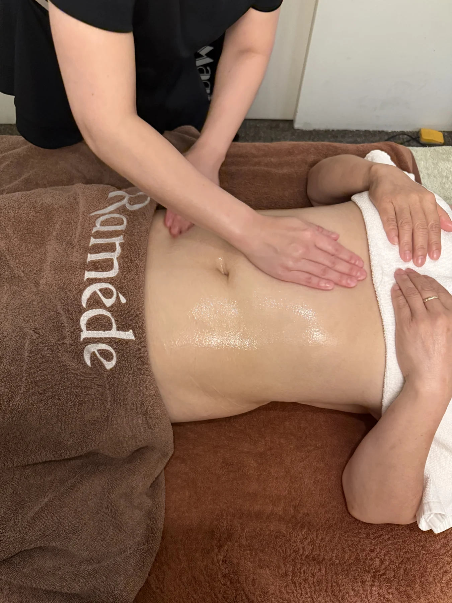
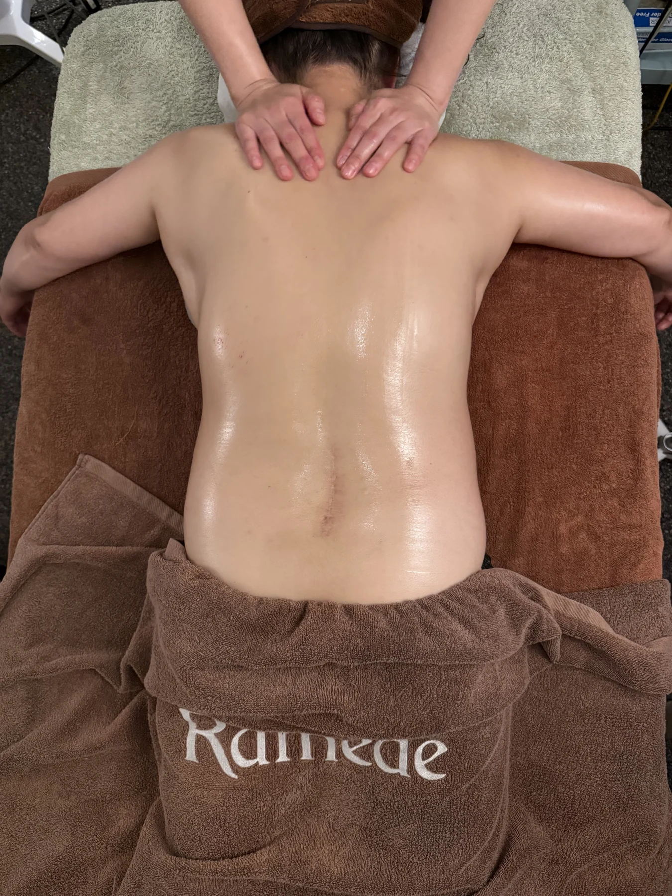
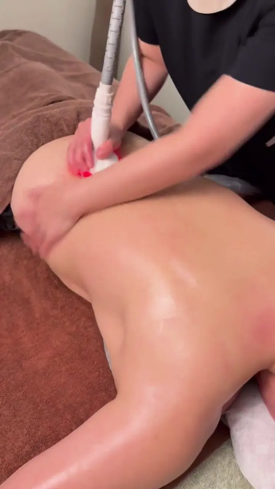
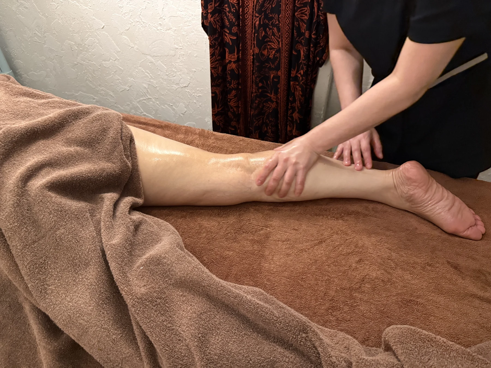
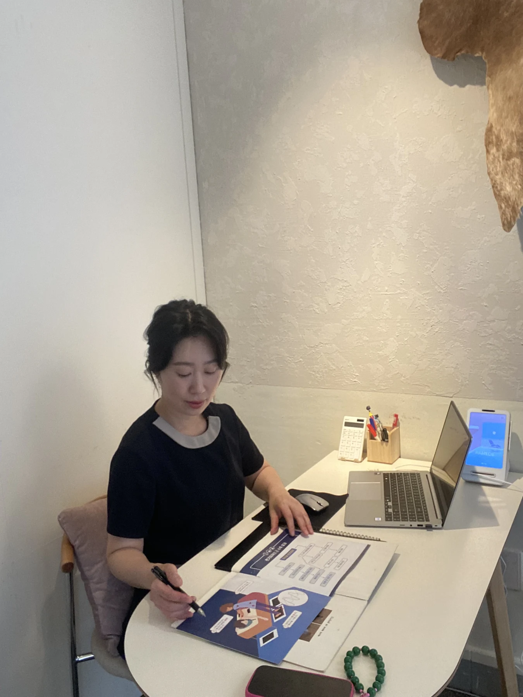

01 / BODY SIGNATURE90 MIN
전신 시그니처 케어
어깨와 등부터 하체까지. 에너지테라피와 고주파, 수기로 전신을 꼼꼼하게 살피는 라메드의 기본 전신 케어입니다.
정상가 120,000원첫 체험100,000원
A MOMENT, JUST FOR YOU
오늘의 컨디션을 듣고, 필요한 곳을 세심하게.
에너지테라피와 고주파, 수기 관리가 함께하는
거제 라메드 에스테틱입니다.

ENERGY THERAPY · BODY · SKIN · HEAD SPA
LISTEN TO YOUR BODY
일과 가족을 챙기느라 미뤄둔 나의 컨디션.
어디부터 관리해야 할지 몰라도 괜찮습니다.
원하는 관리 부위와 일상의 습관을 이야기해주세요.
지금 나에게 필요한 관리부터 함께 살펴봅니다.

DETAIL IN EVERY TOUCHTHE RAMÈDE WAY
같은 관리라도 필요한 부위와 컨디션은 다릅니다. 라메드는 충분히 이야기를 나누고, 관리의 구성과 소요 시간을 안내한 뒤 한 분 한 분에게 집중합니다.
원하는 부위, 생활 습관, 오늘의 컨디션을 확인합니다.
에너지테라피를 중심으로 고주파와 수기 관리를 함께 구성합니다.
관리 목적과 컨디션에 맞춰 주기와 횟수를 상담합니다.
OUR PROGRAMS
전신부터 고민 부위까지.
관리 구성과 차이를 살펴보고 편하게 문의해주세요.
어깨와 등부터 하체까지. 에너지테라피와 고주파, 수기로 전신을 꼼꼼하게 살피는 라메드의 기본 전신 케어입니다.
수기 근막케어, 고주파, 에너지테라피에 전신 원적외선 기기관리를 더한 구성. 조금 더 여유롭게 나에게 집중하는 전신 코스입니다.
바디라인이 고민될 때. 후면의 어깨·등·허리·하체와 전면의 복부·허벅지·데콜테를 수기와 고주파·기기로 관리합니다.
두피와 두근막에 집중하는 케어. 두피·모근 환경 관리와 함께 목과 견갑 부위까지 세심하게 살핍니다.
FOCUSED CARE
부위별 맞춤케어 & 스킨케어
등·후면 및 목 / 상체 전·후면 및 복부 / 하체 전·후면 및 풋케어
고민 부위에 따라 관리 비중을 조절합니다.스킨 리파인 — 색소·잡티·모공 고민
에너지 리프팅 리빌드 — 주름·탄력 고민
광채 리셋 — 미백·수분 고민
위 프로그램은 3회 구성입니다. 첫 체험 가격과 별도로 운영됩니다.
MOMENTS OF CARE
라메드에서 실제로 진행하는 관리 장면입니다.
오늘의 컨디션에 따라 관리 부위와 구성을 상담합니다.


A NOTE FROM RAMÈDE
안녕하세요. 거제에서 라메드 에스테틱을 운영하는 윤지현입니다. 재방문과 소개로 이어져온 라메드는 편안한 상담과 꼼꼼한 디테일 케어를 소중히 생각합니다.
관리사가 한 번 더 세심하게 살피면, 고객은 조금 더 편안할 수 있다고 믿습니다. 처음 찾아주시는 분도 편하게 머무실 수 있도록 정성을 다하겠습니다.
라메드 에스테틱 원장 윤지현

COMFORT IN EVERY DETAIL
관리 도구의 위생을 세심하게 챙깁니다.
일회용 안면커버와 해면을 사용합니다.
관리 고객 수에 맞춰 매일 세탁하여 사용합니다.
BEFORE YOUR VISIT
시그니처는 90분, 스페셜은 120분입니다. 스페셜은 전신 원적외선 기기관리가 포함되어 관리 시간에 차이가 있습니다. 자세한 구성은 상담 시 안내합니다.
처음에는 첫 체험 가격으로 전신 스페셜 케어를 추천드립니다. 다만 원하는 관리 부위와 컨디션을 먼저 듣고 적합한 구성을 함께 상담합니다.
처음 방문하시는 고객에게 1회 적용하며 리뷰 작성이 필수입니다. 전신 시그니처·스페셜·슬리밍·헤드스파에 적용됩니다. 부위별 맞춤케어와 스킨케어는 별도의 3회 구성입니다.
일반적으로 주 1회 간격을 안내하되, 컨디션과 관리 목적에 따라 달라집니다. 상담에서는 불편한 부위, 질환 여부, 운동·수면 습관, 스트레스와 부종 등 전반적인 컨디션을 확인합니다.
원하는 관리와 방문 일정을 알려주시면 가능한 시간을 상담 후 안내합니다. 카카오채널 또는 전화로 먼저 문의해주세요. 운영시간 조율도 상담 가능합니다.

YOUR TIME STARTS HERE
경남 거제시 능포로2길 39, 1층
방문 시간은 상담을 통해 조율할 수 있습니다.
010.9312.7843 ↗